Wie nennt man den Durchlässigkeitsgrad einer Membran ?
- Permeabilität
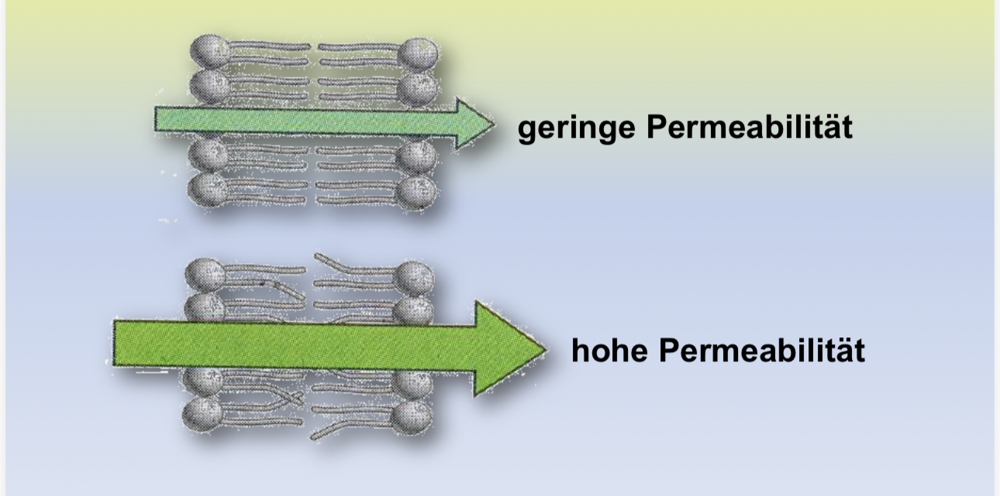
Peptide
Was ist d. Unterschied zw. einer Mizelle, einem Liposom und einer Lamelle ?

Atomare Bindungen:
Energetik:
Kohlenhydrate (Zucker):
Proteine:
Protein-Sorting: Signalsequenzen als "Adressaufkleber" für den Zielort (ER, Kern, Mitochondrien).
Membranen & Kompartimente:
Hydrophober Effekt: Der fundamentale "Baumeister" für Lipid-Doppelschichten (Vesikel, Peroxisomen).
Spezialisten: Sekretorische Vesikel (Export) vs. Peroxisomen (Entgiftung).
Evolution:
Viren & Phagen eine Grenzform des Lebens dar ?Nukleinsäurenstrang$^!$(R- oder DNA) $\underrightarrow{\ \ \ \ \textcolor{#c72483}{\text{nicht ü.lebensfähig ohne}}\ \ \ \ }$ Wirtszelle$^!$Virus & einer PhagePhage $\underrightarrow{\ \ \ \ \textcolor{#c72483}{\text{spezialisiert auf}}\ \ \ \ }$ BakterienViren & Phagen aufgebaut ?Baukastenprinzip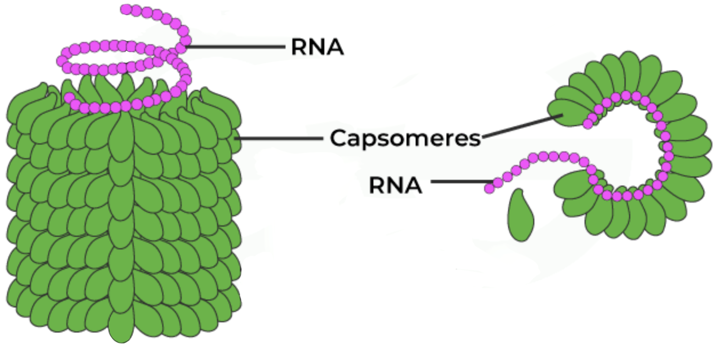
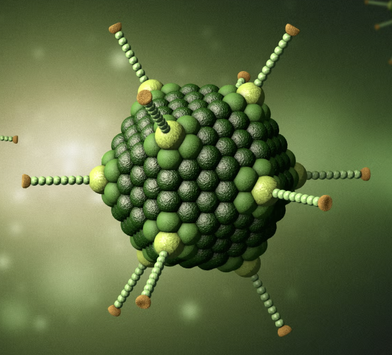
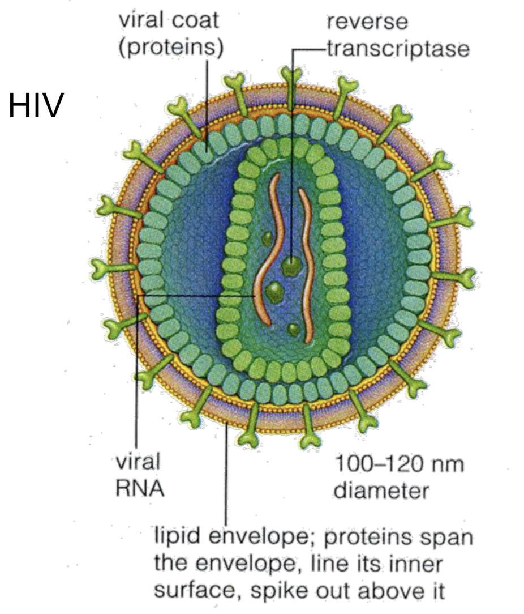
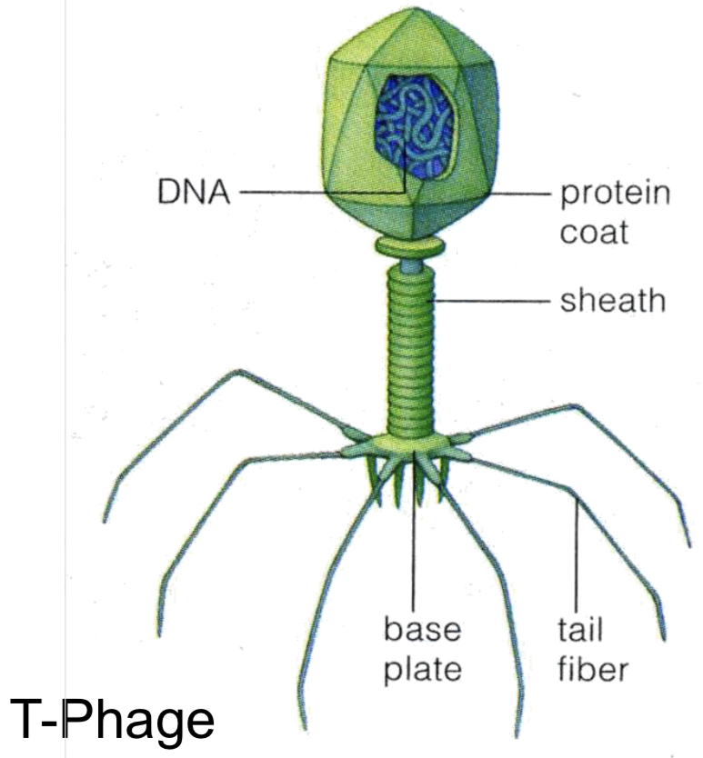
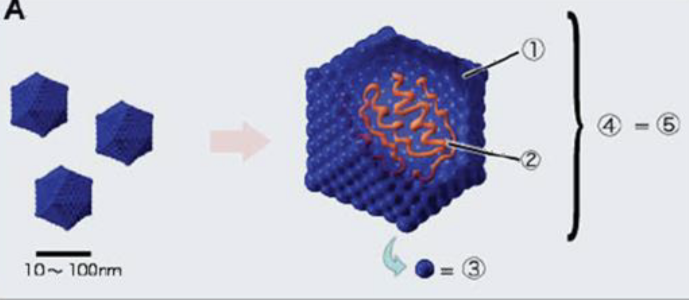
Lösung
- Kapsid (Ikosaeder)
- Nukleinsäure
- Kapsomer
- Nukleokapsid
- Virion
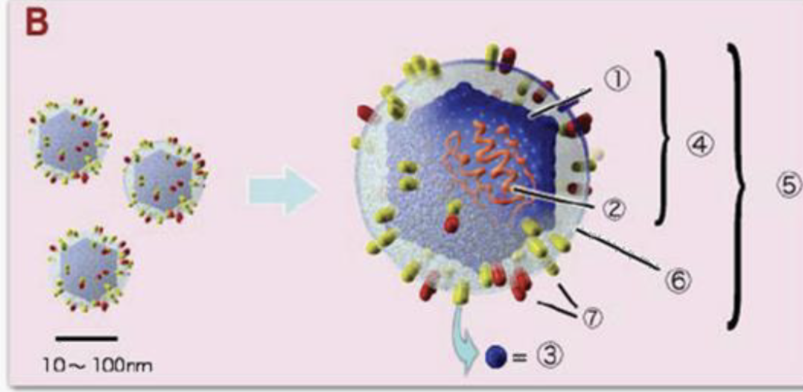
Lösung
- Kapsid
- Nukleinsäure
- Kapsomer
- Nukleokapsid
- Virion
- Hülle (Envelope)
- Spikes (Glykoproteine)
Lytic Cycle (Zerstörerisch)$^!$
Virus-DNA produzieren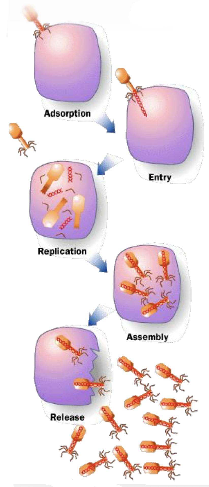
Lysogenic Cycle (Schläferich)
Lysogenic Cycle $\to$ Lytic CycleBurst:
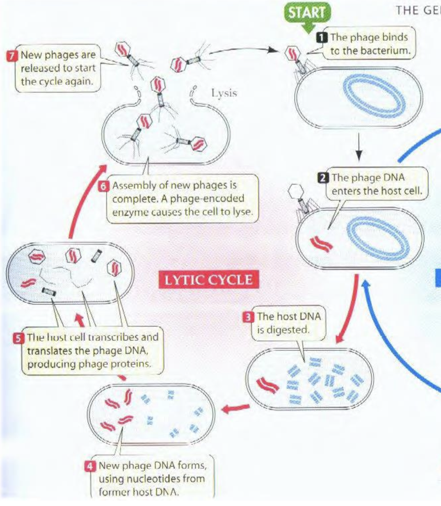
Budding:
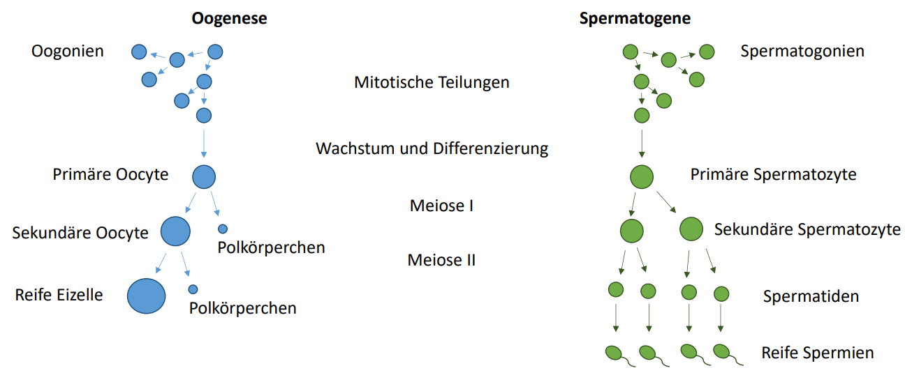
Procaryoten: $\begin{cases}
\text{Archaea}\
\text{Bakteria}
\end{cases}$Eucaryoten: Ein - oder Mehrzellig
- Archaea: Brücke zw. Euk. & Prok.
- Vorkommen = extremen Lebensräume $\begin{cases} \text{extrem thermophil} \ \text{extrem halophil(Salzkonzentration)} \end{cases}$
Eukaryoten & Prokaryoten ?kovalente & eine nicht kovalente BindungKovalente Bindung
Valenzelektronen = geteilt
Nicht kovalente Bindung
ValenzelektronenElektronegativitätChiralität, oft als Händigkeit bezeichnet, beschreibt das Prinzip, dass ein Molekül und sein Spiegelbild sich nicht durch einfache Drehung zur Deckung bringen lassen.
Die Voraussetzung hierfür ist ein asymmetrisches C-Atom, das an vier völlig verschiedene Atomgruppen gebunden ist. Diese räumliche Anordnung führt zu Stereoisomeren, die sich in ihrer biologischen Funktion unterscheiden können.
Da biologische Systeme nach dem Schlüssel-Schloss-Prinzip arbeiten, erkennt die Zelle spezifische chirale Formen, während ihr Spiegelbild oft nicht „andocken“ kann.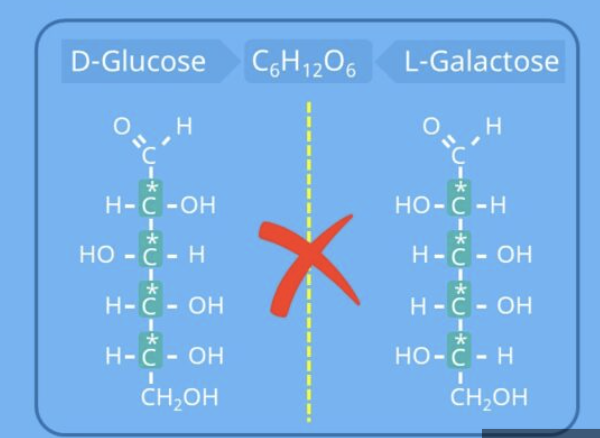
<script type="module">
import mermaid from 'https://jsdelivr.net';
mermaid.initialize({
startOnLoad: true,
theme: 'base',
themeVariables: {
primaryColor: '#ffffff',
primaryTextColor: '#1a237e',
lineColor: '#000000',
nodeBorder: '#000000'
}
});
</script>
<div class="mermaid">
graph TD
A[stereoisomere] --> B[Diastereoisomer]
A --> C[Enantiomere]
B --> D[Anamere]
B --> E[Epimere]
</div>
Schlüssel-Schloss-PrinzipAminosäure
KohlenhydrateGlycin COOH
|
H₂N — C — H <-- Das zentrale C hat zwei H-Atome,
| ist also NICHT asymmetrisch!
H
Natrium) $\underrightarrow{\ \ \ \ \textcolor{#c72483}{\text{gibt ab}}\ \ \ \ }$ Elektron $\underrightarrow{\ \ \ \ \textcolor{#c72483}{\text{wird zum}}\ \ \ \ }$ positiven Kation ($Na^+$), d. andere (Chlor) nimmt es auf $\underrightarrow{\ \ \ \ \textcolor{#c72483}{\text{wird zum}}\ \ \ \ }$ negativen Anion ($Cl^-$). Die entgegengesetzten Ladungen ziehen sich elektrostatisch an.Kristallgitter (Ionengitter)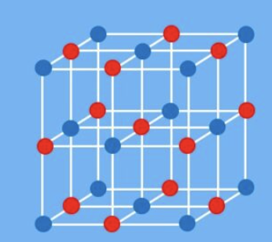
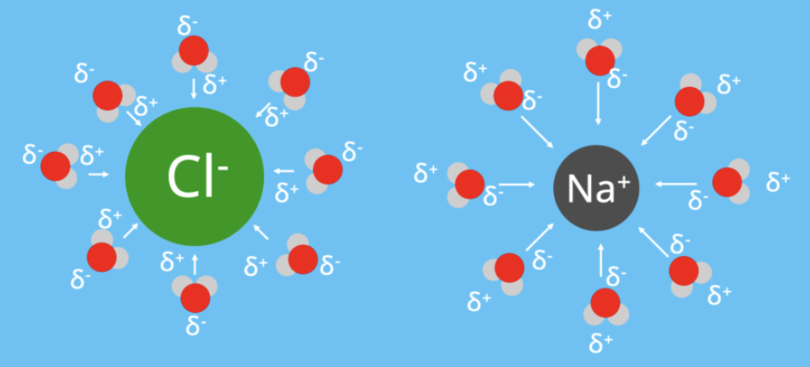
endotherm).Hydratation: Ionen $\underrightarrow{\ \ \ \ \textcolor{#c72483}{\text{umgeben}}\ \ \ \ }$ Wassermoleküle $\underrightarrow{\ \ \ \ \textcolor{#c72483}{\text{Entstehung}}\ \ \ \ }$ Hydrathülle $\underrightarrow{\ \ \ \ \textcolor{#c72483}{\text{wird frei}}\ \ \ \ }$ HydratationsenergieLösungsenthalpie ($\Delta H_{sol}$): $Gitterenergie + Hydratationsenergie$Exotherm: Es wird mehr Energie bei der Hydratation frei, als für das Gitter benötigt wurde ($\Delta H_{sol} < 0$) $\implies$ Glas wird warm.Endotherm: Es wird mehr Energie benötigt, um das Gitter zu knacken, als bei d. Hydratation frei wird ($\Delta H_{sol} > 0$) $\implies$ Glas kühlt ab.engen Röhren aufsteigen $\implies$ wichtig f. Pflanzen/BäumeWasseroberflächenspannung $\underrightarrow{\ \ \ \ \textcolor{#c72483}{\text{ermögl. Insekten}}\ \ \ \ }$ Auf Wasser zu laufenKlebestoff $\underrightarrow{\ \ \ \ \textcolor{#c72483}{\text{zsm.kleben v. Stoffen}}\ \ \ \ }$ wichtig f. Stofftransport in biologischen Systemen 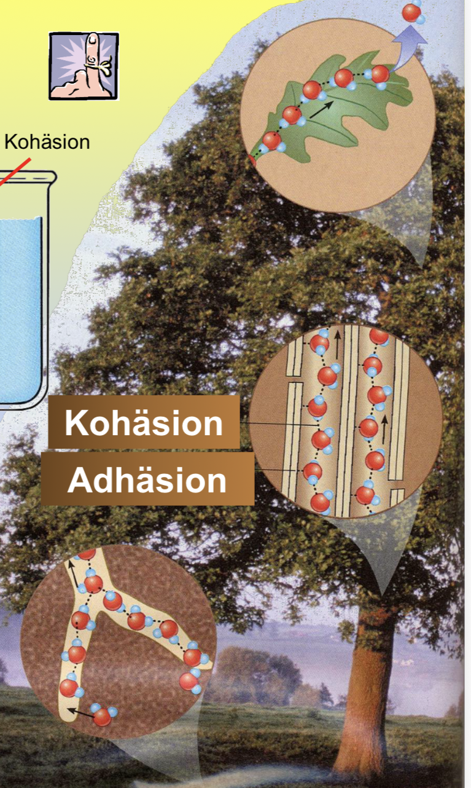
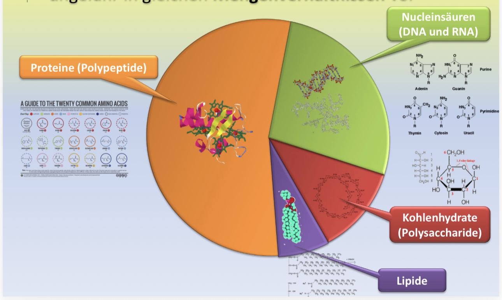
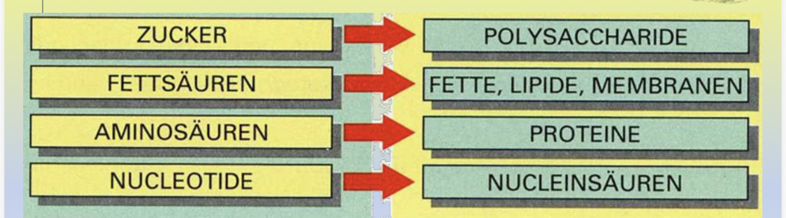
$(CH_20)_n$
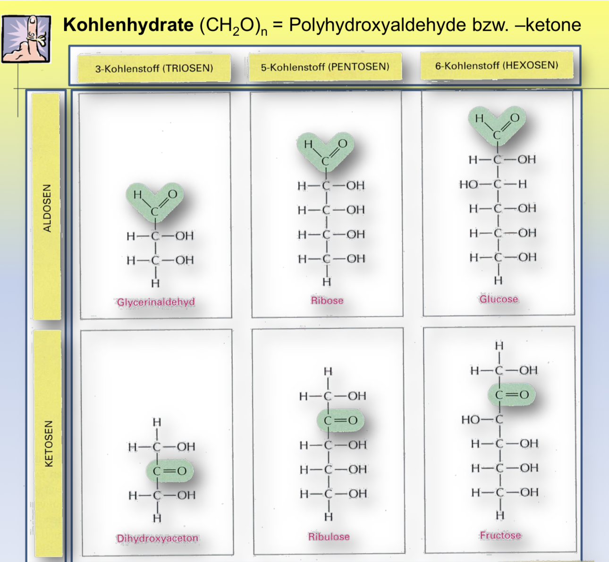
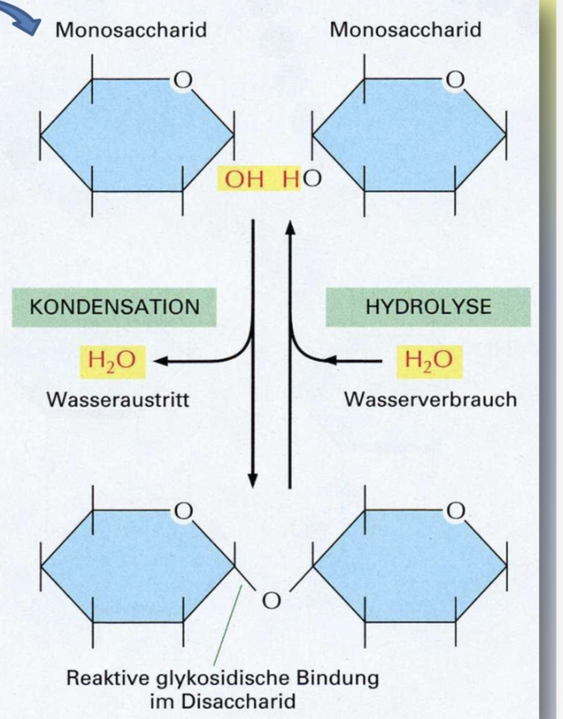
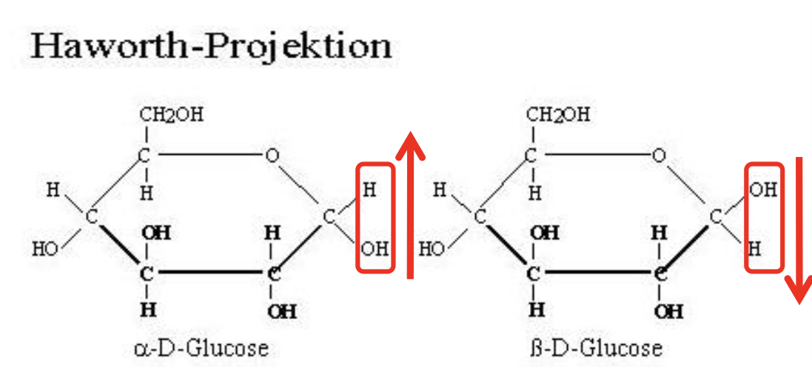
modifizierte ZuckermoleküleN-AcetylglucosaminGlucosaminGlucosesäure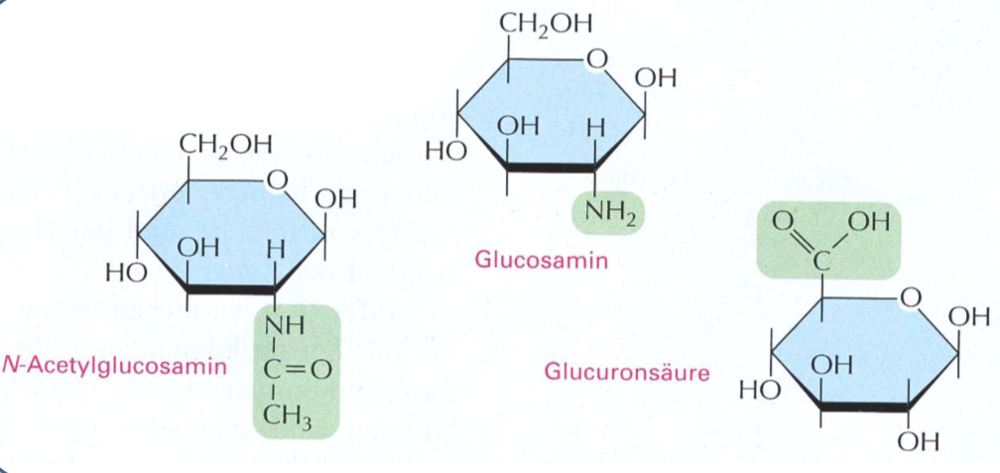
d. Unordnung
nehmen wir mal an, dass ich ein Zimmer betrete $\implies$ wird autom. unordentl.
wenn ich d. Endotopie verringern möchte muss ich Energie aufwenden
Apolare/Unpolare Moleküle ?Keine Ionen
keine permanenter Dipol
Störfaktor des Wassers: Wasser ist ein polares Lösungsmittel aus starken Wasserstoffbrückenbindungen.
unpolares Molekül in d. Wasser gelangt $\implies$ keine Bindung mit Wassermolekülen
unpolares Molekül verdrängt d. Wassermolekülen $\to$ zwingt sie in eine käfigartige Struktur, um drumherum zu bauen $\leftarrow$ Wasser möchte aber flexibel sein
Wassermolekülen in diesem Käfig = stark eingeschränkt. D. System verliert an Entropie $\implies$ energetisch & thermodynamisch ungünstigKompartimente bilden!apolare Moleküle keinen Dipol haben & somit einen hydrophoben Effekt verursachen. Diese Hydrophobie sorgt dafür, dass sich d. Wassermoleküle $\lnot$ frei bewegen können $$ \text{Entropie} \downarrow$$
D. Wasser versucht den Störfaktor so klein wie mögl. zu halten $\to$ Entstehung v. Membranen. Bei den Membranen sorgt d. f. d. Flüssig-Mosaik-Modell. Dies ermögl. d. Kompartimentierung.
70%= Wasser30% = Trockenmasse
26%)
15%7%2%2%4%)
Prokaryoten
Transkription & Translationräuml. $\lnot$ getrennt
Eukaryoten
Eukaryoten
mono-cistronische RNAProkaryoten
poly-cistronische RNAT-Phagen werden radioaktiv makiert
Phagen $\underrightarrow{\ \ \ \ \textcolor{#83b7ea}{\text{infizieren}}\ \ \ \ }$ Bakterien
leere Virushüllen $\underrightarrow{\ \ \ \ \textcolor{#83b7ea}{\text{getrennt}}\ \ \ \ }$ v. Bakterien
Ergebnis:
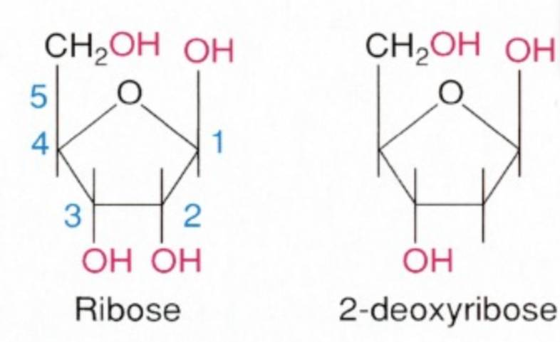
5-Ende: Phosphatgruppe3-Ende: Hydroxgruppe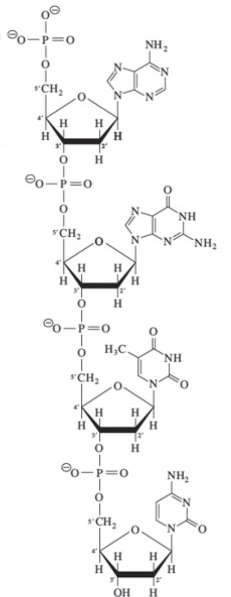
A-T: 2G-C: 3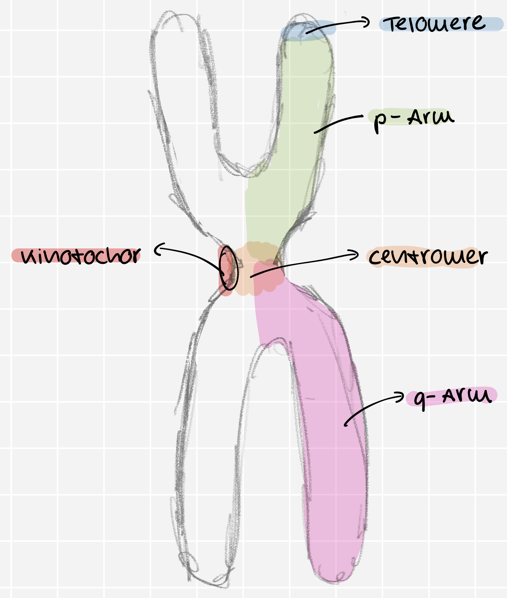
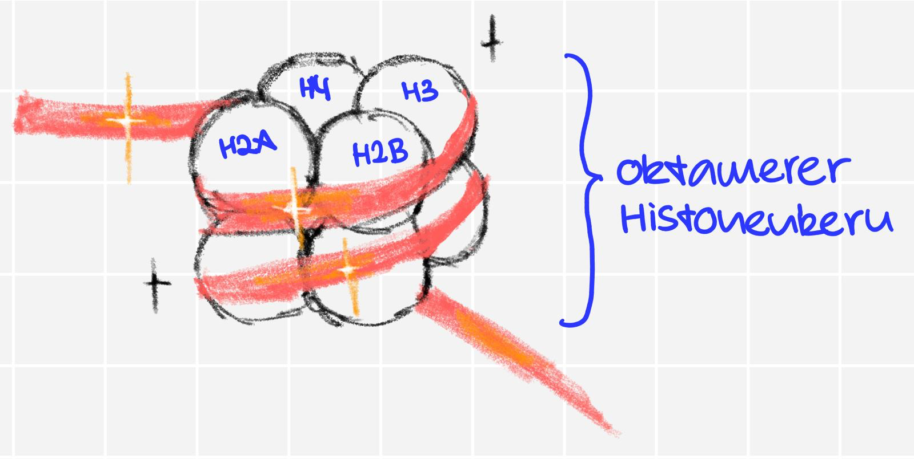
Lockerung
Verfestigung
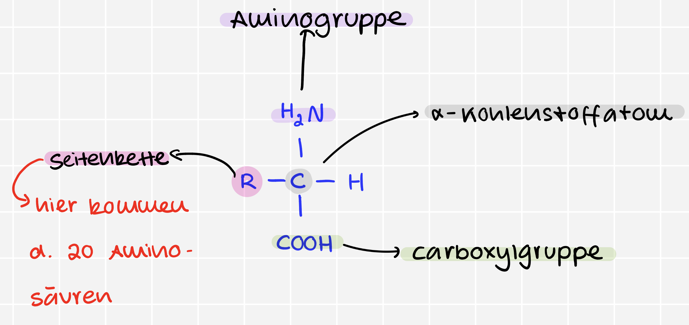
Protein im Ribosom hergestellt $\underrightarrow{\ \ \ \ \textcolor{#83b7ea}{\text{bestimmter Teil d. Aminosäure}}\ \ \ \ }$ Signalseqzenz $\underrightarrow{\ \ \ \ \textcolor{#83b7ea}{\text{ist wie}}\ \ \ \ }$ Postleitzahl-Code $\underrightarrow{\ \ \ \ \textcolor{#83b7ea}{\text{eingebaut}}\ \ \ \ }$ AminosäurenabfolgeTransport-Proteine oder Rezeptoren $\underrightarrow{\ \ \ \ \textcolor{#83b7ea}{\text{erkennen sofort}}\ \ \ \ }$ SignalsequenzRezeptor $\underrightarrow{\ \ \ \ \textcolor{#83b7ea}{\text{erkennt}}\ \ \ \ }$ schleußt Protein ein $\underrightarrow{\ \ \ \ \textcolor{#83b7ea}{\text{bringt}}\ \ \ \ }$ richtigen Ort (Bsp.: Durch Zellkernporen, Membranen des Organells)CytosolProteine mit Signalsequenz werden bei Translation $\underrightarrow{\ \ \ \ \textcolor{#83b7ea}{\text{direkt Eingeschleußt in}}\ \ \ \ }$ ERGolgi-Apparat fungiert als Versadtszentrum. Proteine werden in Versikel verpackt & zum Golgi-Apparat transportiert. Dort bekomemn sie eine Addresse (Bsp.: Glykosylierung). Dannach werden sie verschickt. Sie kommen in ...
...
Lysosomen, wenn die als Verdauungsenzyme gebracuht werden...
Membran. Wenn sie als Membranproteine eingebaut werden sollen...
Sekretion: Wenn sie alsHormoneoderSignalstoffeausgeschüttet werden sollen
Durch spezifische Import-Signale, d. d. Protein direkt zum entsprechenden Organell leiten
Proteolyse
Glykosylierung
Phsophorylierung
Chaperonin-ZyklusFalsch gefaltete Proteine $\underrightarrow{\ \ \ \ \textcolor{#83b7ea}{\text{haben}}\ \ \ \ }$ rausragende hydrophobe Bereiche , d. gefählich sein können (Entropie, Hydrophobe Effekt, Verklumpung)kaputtes Protein $\underrightarrow{\ \ \ \ \textcolor{#83b7ea}{\text{hineingezogen}}\ \ \ \ }$ vom HSP60 in die obere Kammer GroEL , welches d. obere Öffnung des Chaperon-Koplexes ist. Dessen Wand zieht d. hydrophilen Ränder anATP Verbrauch dran (GroES cap) $\underrightarrow{\ \ \ \ \textcolor{#83b7ea}{\text{schlagartige Veränderung}}\ \ \ \ }$ des Innenraums($hydrophob \to hydrophil$) $\implies$ Dadruch ist d. kaputte Protein komplett isoliert, als würde es in einem Vakuum liegen & kann sich jzt. komplett frei faltenGroES cap öffnet sich ernst, wenn das kaputte Protein richtig gefaltet hat.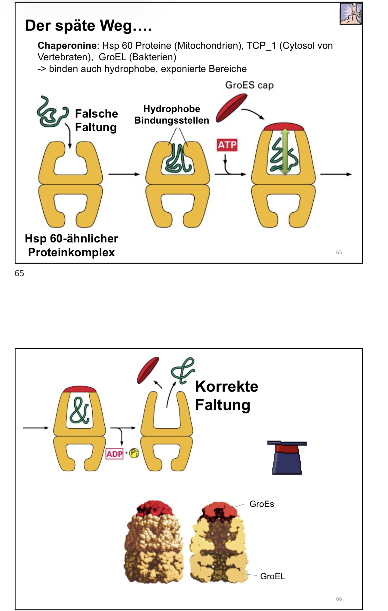
Energie(Blitze) sind aus einfachen, unlebenden Stoffen Aminosäuren entstanden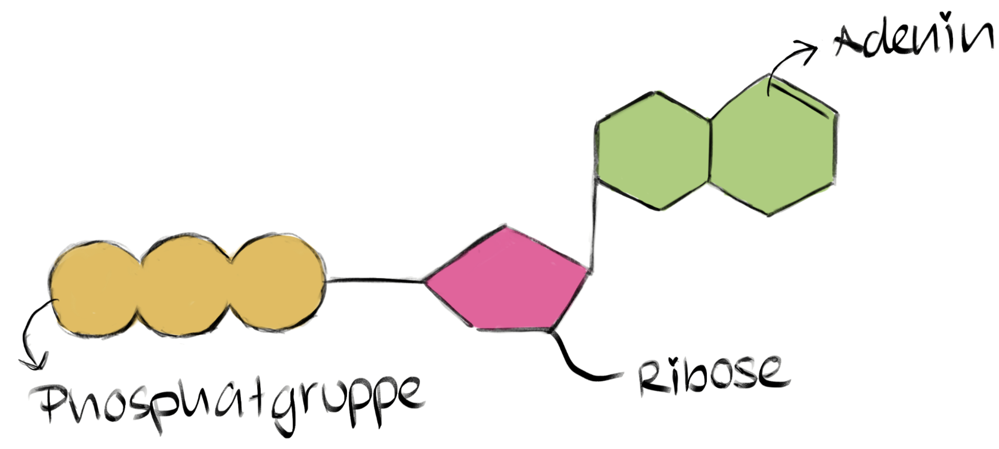
Molekül gibt Elektronen ab, welches v. anderen aufgenommen wird
Redox-Schritte, um Energie zu ü.tragen anstatt Energie direkt aus Zucker zu verbrennen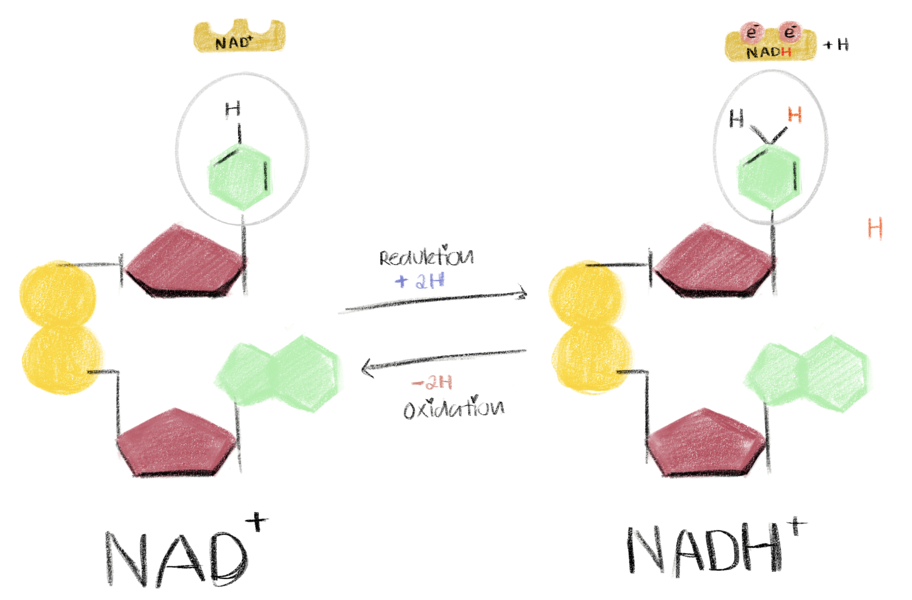
Verbindungen mit negativem Redoxpotenzial zu Verbindungen mit positivem PotenzialStandardpotential: $E^0$Weil sie nicht messbar sind
Lösung:
ElektronendonatorElektronenakzeptornatürl. Systeme sind im Prinzip offen. Im Labor werden geschlossene Systeme hergestellt, um thermodynamische Gleichgewichte zu untersuchenD. Energie, d. eine Zelle durch Nahrung aufnimmt, ist genau gleich d. Summe aus d. Energie, d. sie f. ihre Arbeit verbraucht, & d. Energie, d. sie als Wärme an d. Umgebung abgibt.
$\Delta H = H \text{Anfang} - H \text{Ende} = q - w$
$H$ = Gesamtenergie
$q$ = Wärme $\leftarrow$ System $\underrightarrow{\ \ \ \ \textcolor{#83b7ea}{\text{absorbiert aus}}\ \ \ \ }$ Umgebung
$w$ = Arbeit $\leftarrow$ System $\underrightarrow{\ \ \ \ \textcolor{#83b7ea}{\text{ausgeübt auf}}\ \ \ \ }$ Umgebung
$\boxed{q \lt 0 = \text{exotherme Reaktion}}$
Wärme immer mehr abnimmt$\boxed{q \gt 0 = \text{endotherme Reaktion}}$
Wärme immer mehr wächstEnergie wird zwar n. dem ersten Hauptsatz erhalten, aber ihre Qualität nimmt ab. Wenn Energie umgewandelt wird, geht immer ein Teil als „ungeordnete“ Wärme an d. Umgebung verloren, d. $\lnot$ mehr vollständig in nützl. Arbeit umgewandelt werden kann
In einem abgeschlossenen System
Entropie nimmt bei spontanen Prozessen niemals ab, sondern nimmt ständig zu oder bleibt im GleichgewichtDa d. Leben in offenen Systemen(wie Zellen) stattfindet $\to$ endergonische Reaktionen können $\lnot$ freiwillig stattfinden ohne, dass sie an exergonischen Prozesse gekoppelt werden $\to$ erhöhen Entropie in d. Umgebung
spontane(freiwillige) Prozesse laufen immer in Richtung d. größeren Ethropie ($Energie \to Wärme$)Wärme fließt physikalisch bedingt ausschließlich vom heißen $\to$ kalten KörperZellen d. notw. Ordnung aufrechthalten können $\underrightarrow{\ \ \ \ \textcolor{#83b7ea}{\text{Zellen müssen}}\ \ \ \ }$ freie Energie aus der Umgebung aufnehmen $\underrightarrow{\ \ \ \ \textcolor{#83b7ea}{\text{Grund}}\ \ \ \ }$ lokal sinkende Entropie ausgleichen durch Entropie-Anstieg in d. UmweltSpontanitätEnzymeEnergiebarriere, d. jedes Molekül ü.winden muss \to damit es reagieren kannEnzyme -> senken "Hürde" -> damit Reaktion bei Körpertemperatur stattfinden kann , ohne dass man d. Molekül erst erhitzen mussverlustfrei umgewandelt werden
WärmeOrdnungszustand d. durch ständigen Energie-import (Entropie-Export) erkauft wird$\Delta G = \Delta H - T\Delta S$
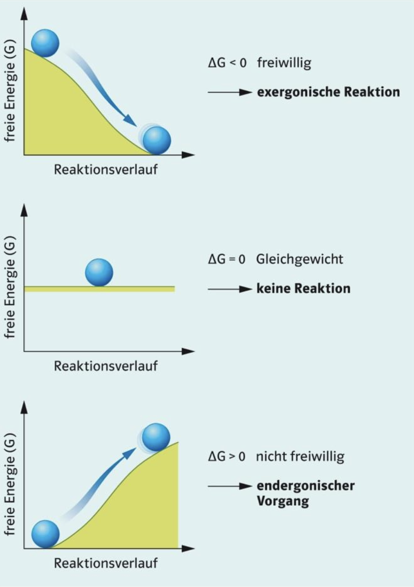
steady state sondern Fließgleichgewicht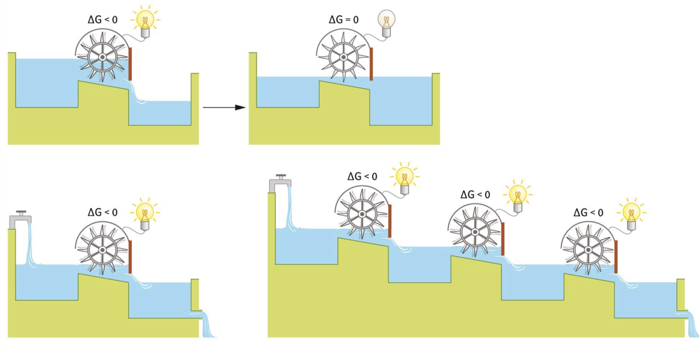
Geschwindigkeit biochemischer Reaktionenexergonisch oder endergonisch)
Kinetik sorgt dafür, dass manche exergonische Reaktionen $\lnot$ stattfinden können, weil d. Energiebarriere zu groß ist
Enzyme sorgen hier dafür, dass d. Barriere gesenkt wirdHexokinase $\underrightarrow{\ \ \ \ \textcolor{#83b7ea}{\text{trifft auf}}\ \ \ \ }$ Substrat(Glucose & ATP) $\underrightarrow{\ \ \ \ \textcolor{#83b7ea}{\text{Anpassung}}\ \ \ \ }$ Substrat trifft auf aktive Zentrum $\underrightarrow{\ \ \ \ \textcolor{#83b7ea}{\text{Denaturierung}}\ \ \ \ }$ Schlüssel-Schloss-Prinzip mögl. $\underrightarrow{\ \ \ \ \textcolor{#83b7ea}{\text{Enzym katalysiert Reaktion}}\ \ \ \ }$ neue Produkte $=$ Glucose-6-Phosphat & ADP $\underrightarrow{\ \ \ \ \textcolor{#83b7ea}{\text{&lnot Schlüssel-Schloss-Prinzip}}\ \ \ \ }$ neue Produkte lösen sich ab $\underrightarrow{\ \ \ \ \textcolor{#83b7ea}{\text{Ennzym wieder}}\ \ \ \ }$ Ursprüngl. Form f. nächsten DurchgangSubstratspezifitätWirkungsspezifität$E + S \rightleftharpoons ES \rightleftharpoons EP \rightleftharpoons E + P$
Enzym $\to$ ProduktEnzym an sein Substrat bindet:
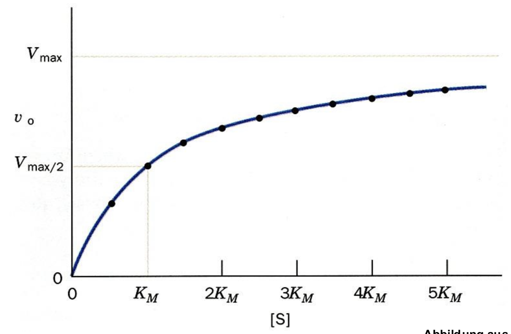
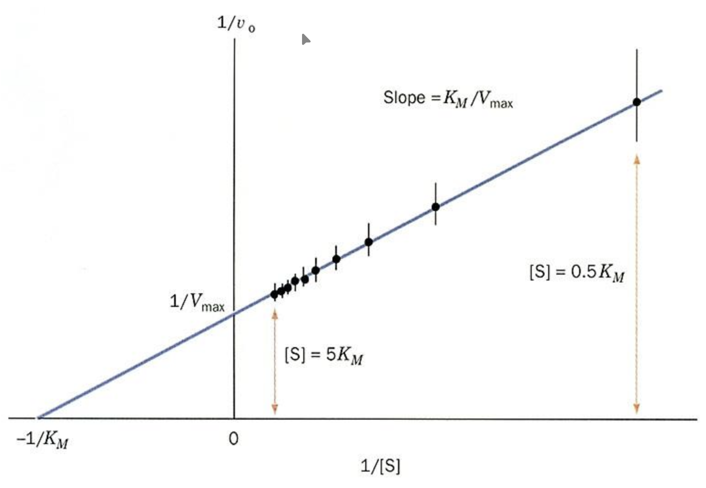
$[E]_t =$ Gesamtkonzentration des Enzyms
$[S] =$ Gesamtkonzentration des Substrats
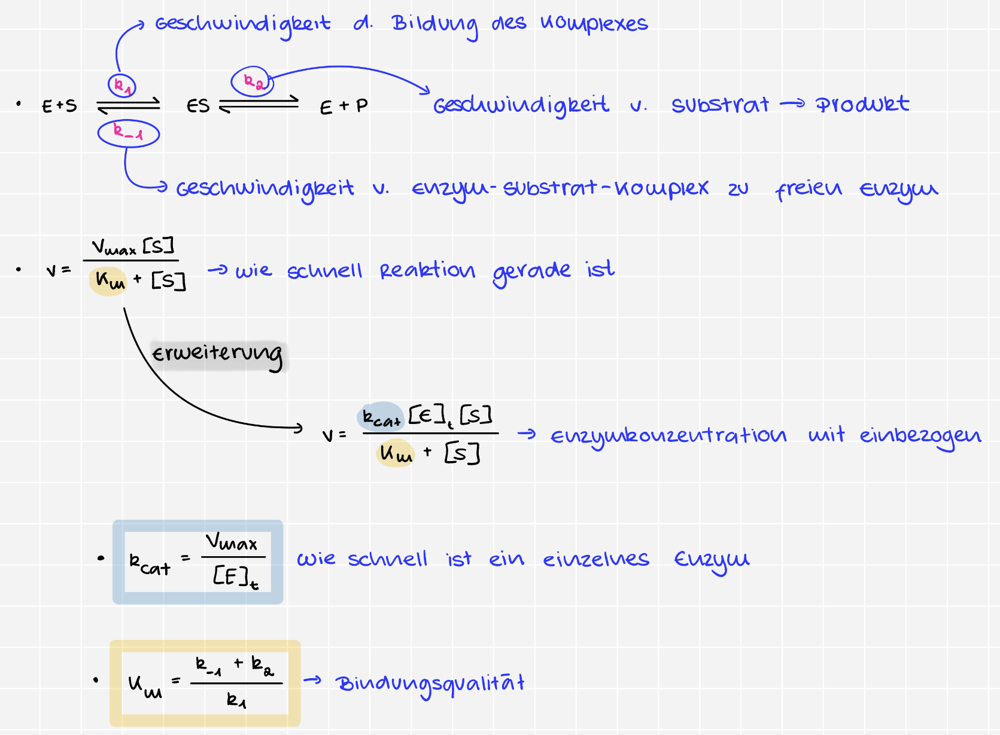
Inhibitorenkompetetive Hemmung
allostretische Hemmung
Inhibitor konkoriert mit Substratallostretische Inhibior denaturiert Enzym $\implies$ Substrat kann $\lnot$ binden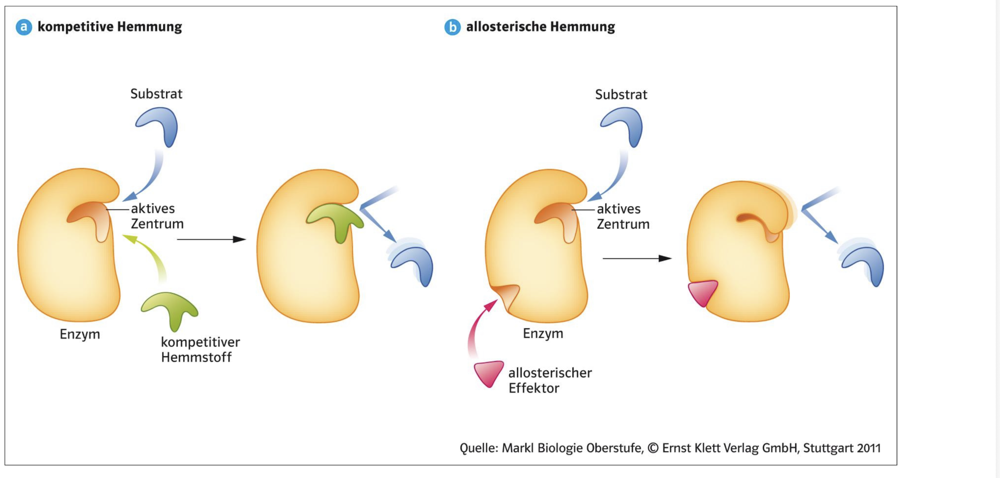
$E + S \xrightleftharpoons[k_{-1}]{k_1} ES \rightleftharpoons EP \xrightleftharpoons{k_2} E + P$
$k_1$ = Geschwindigkeit E mit Sybstrat bindet: Affinität
$k_1$ = Geschwindigkeit d. Produktbildung
$k_{-1}$ = Geschwidigkeit des Zerfalls des Enzyms & Substrats ohne Reaktion
k_1, k_2 & k_{-1} = Geschwindigkeitskonstanten
$$\overbrace{k_1 [E][S]}^{\text{Bindung}} = \overbrace{k_{-1}[ES] + k_2 [ES]}^{\text{Zerfall des ES-Komplexes}}$$
Umstellung $\implies$ Michaelis-Menten-Konstante
$$K_m = \frac{(k_2 + k_{-1})}{k_1} = \frac{E+S}{ES} = \left(\frac{\text{Zerfall}}{\text{Bildung}}\right)$$
Einheit: $\frac{mol}{l}$
Michaelis-Menten-Gleichung
$$v = \frac{V_{max}[S]}{K_m + [S]}$$